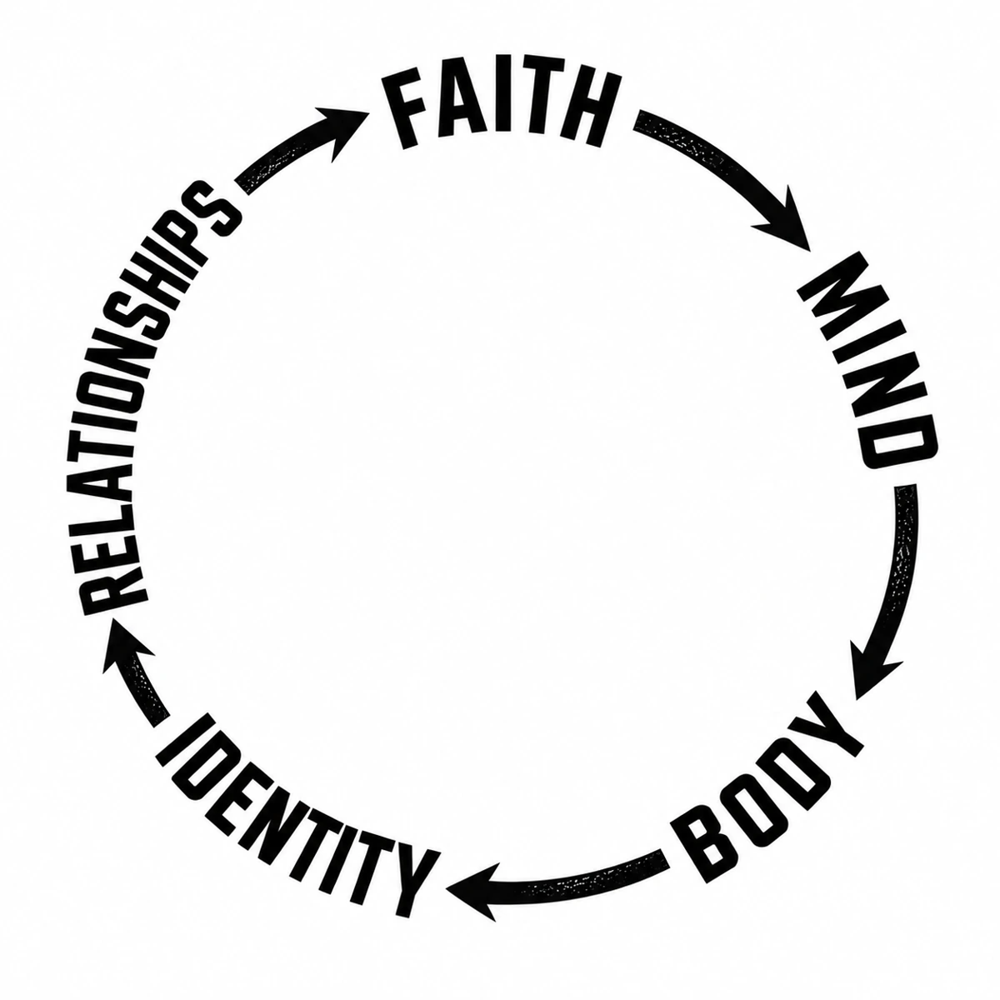

For men who never got the blueprint
BECOME THE MAN YOU NEEDED.
Your past can explain you without controlling you. Unashamed Journey is about rebuilding the five areas that shape how you live, lead, love, and show up.

When nobody handed you the blueprint
YOU DON'T HAVE TO FIX YOUR WHOLE LIFE TODAY.
You need one honest place to begin.
This is for the man who learned how to survive before anyone showed him how to live. The guy who became useful, dependable, strong — and still wonders whether he is becoming the man, husband, or father he wants to be.
The Rebuild Circle
FIVE AREAS.
ONE WHOLE MAN.
Growth is not a straight line. Life exposes different weak spots at different times. The circle gives you a place to come back to.
FAITH
Your anchor. Hope, meaning, prayer, Scripture, surrender.
↗ 02MIND
Thoughts, fear, anger, shame, patterns, masks, avoidance.
↗ 03BODY
Training, sleep, movement, fuel, and keeping promises to yourself.
↗ 04IDENTITY
Who you are becoming — beyond your past, job, failures, or approval.
↗ 05RELATIONSHIPS
Presence, repair, communication, friendship, marriage, fatherhood, community.
↗The Method
THE CIRCLE TELLS YOU WHERE.
THE METHOD TELLS YOU HOW.
You do not rebuild by collecting more advice. You rebuild by facing what is real, owning what is yours, and changing what you can actually change.
Get honest about what is actually happening.
Separate what happened to you from what is now your responsibility.
Take the next practical action instead of staying stuck.
Your first step
THE 7-DAY
RESET.
Seven days to stop surviving and start rebuilding.
One short lesson. One honest question. One practical move each day. Built for the guy who knows something needs to change but does not know where to start.
Early access
JOIN THE RESET LIST.
Be first to know when the free Reset opens.
The scar opens the door
THE LESSON IS WHAT SERVES THE MAN.
I know what it feels like to need a blueprint and not have one.
Unashamed Journey was built from lived experience — fatherlessness, instability, loss, masks, faith, rebuilding, marriage, fatherhood, work, and learning how to become dependable without becoming hardened.
This is not about having everything figured out. It is about doing the work, telling the truth about what it takes, and helping other men build what they may never have received.